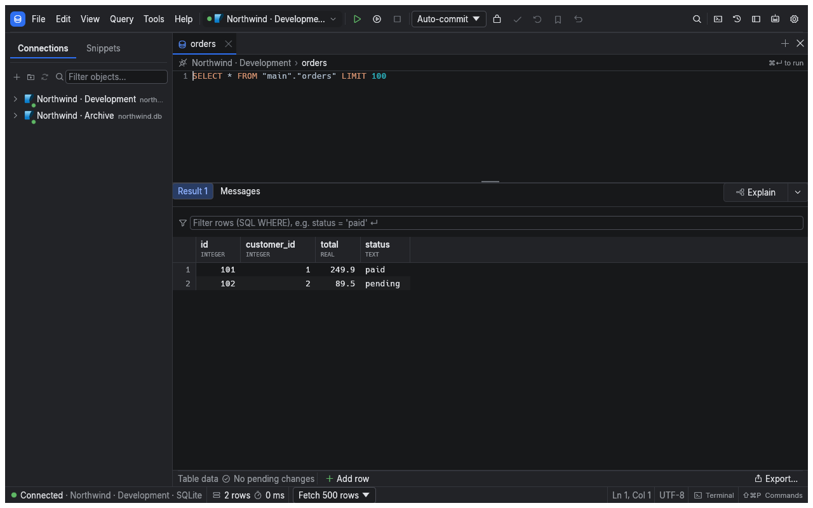

Manual › First steps
Run your first query
Start with the included demo database to learn the workspace without configuring a server. sqlr runs locally on macOS, Windows and Linux; you sign in to your databases, rather than to a sqlr account.
Install and open sqlr
Download the build for your operating system and architecture from the download page. On macOS, open the DMG and copy sqlr to Applications. On Windows, extract the ZIP and run the executable. On Linux, use the AppImage or extract the archive and run sqlr.
The repository also provides an installer for macOS and Linux:
curl -fsSL https://raw.githubusercontent.com/mceck/sqlr/main/scripts/get-sqlr.sh | shThe installer checks the release checksums. Linux installs under ~/.local by default; macOS uses /Applications, falling back to ~/Applications when needed. Set SQLR_VERSION to choose a release or SQLR_PREFIX to change the Linux installation prefix.
Open the demo
- Start sqlr and choose Open demo database on the welcome screen.
- Wait for the Demo connection and its editor tab to appear.
- Run the prefilled query with ⌘Enter:
SELECT * FROM order_summary LIMIT 100;The result appears below the editor. The demo contains customers, employees, products, orders and order items, all generated sample data. It is a persistent SQLite file in your data directory, so edits survive restarting the app.

Screenshots in this manual use an isolated sample connection; your demo's connection name and rows may differ.
Find your way around
| Area | Use it to |
|---|---|
| Explorer, left | Expand connections, schemas and objects, or right-click for actions |
| Editor and object tabs | Write queries, inspect definitions and browse data |
| Results and Messages | Read returned rows, errors, notices and timing |
| Value panel | Read a selected value in full |
| Toolbar | Choose the active connection, run or stop work, and manage transactions |
| Status bar | Check row counts, timing, transaction state and cursor position |
Panels can be rearranged by dragging their dock tabs. sqlr remembers the arrangement.
- Expand Demo in the explorer, then its schema and tables.
- Open a table to inspect its columns or data.
- Open the command palette with ⌘Shift+P and search for a command.
- Open the object palette with ⌘P and type part of a table or view name.
Shortcuts in this manual use the sqlr preset on macOS. Use Ctrl instead of ⌘ on Windows and Linux; see Settings and shortcuts for the full keymap.
Connect your own database
Use New connection, select your database and fill in the connection form. Choose Test connection before Save. Follow Connect to a database for credentials, TLS and SSH.
Related
- SQL editor: choose between running one statement and a script.
- Results and editing: browse rows and make pending edits.
← Manual · Connect to a database →